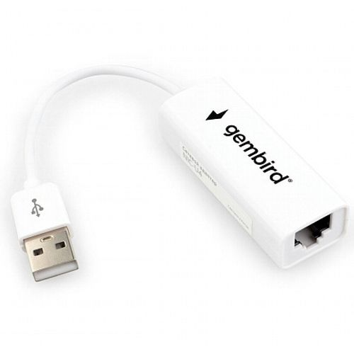

Сетевая карта USB 2.0 – RJ45 Gembird NIC-U4
Сетевое оборудованиеКатегория
Сетевое оборудование
Маркировка
Gembird NIC-U4
Тип устройства
USB Ethernet-адаптер
Интерфейс
USB 2.0
Сетевой разъём
RJ-45 (мама)
Скорость сети
10/100 Мбит/с
Режимы передачи
half/full duplex
Длина кабеля
10 см
Размеры
65 × 20 × 10 мм
Вес
20 г
Чип
ASIX AX88772C
Кратко
Это USB 2.0 сетевой адаптер Gembird для подключения устройства к проводной сети Ethernet через RJ-45. Подходит как внешняя сетевая карта для ПК, ноутбуков и совместимых устройств.
Описание
Устройство предназначено для добавления проводного сетевого порта RJ-45 через USB 2.0. В карточке производителя указана скорость 10/100 Мбит/с с поддержкой half/full duplex и автоопределения скорости соединения. Адаптер рассчитан на работу без выключения питания (HotPlug) и поддерживает Wake-on-LAN. Типичное применение — когда у ноутбука или устройства нет встроенного Ethernet-порта, либо нужен запасной сетевой интерфейс. Внутри используется однокристальное решение ASIX AX88772C.
Документация
Страница изделия Gembird NIC-U4 с техническими характеристикамиСтраница поддержки Gembird с драйверами и мануалами
id hw-2026-069